转载自 http://blog.csdn.net/jinzhuojun/article/details/39698317
转载自http://blog.csdn.net/ear5cm/article/details/45093807
Edited: 增加了fence的翻译 android-fences-introduction
Fence在Graphics中的应用
Fence是一种同步机制，在Android里主要用于图形系统中GraphicBuffer的同步。 那它和已有同步机制相比有什么特点呢？
它主要被用来处理跨硬件的情况，尤其是CPU，GPU和HWC之间的同步，另外它还可以用于多个时间点之间的同步。
GPU编程和纯CPU编程一个很大的不同是它是异步的，也就是说当我们调用GL command返回时这条命令并不一定完成了，只是把这个命令放在本地的command buffer里。具体什么时候这条GL command被真正执行完毕CPU是不知道的，除非CPU使用glFinish()等待这些命令执行完，另外一种方法就是基于同步对象的Fence机制。下面举个生产者把GraphicBuffer交给消费者的例子。
如生产者是App中的renderer，消费者是SurfaceFlinger。GraphicBuffer的队列放在缓冲队列BufferQueue中。BufferQueue对App端的接口为IGraphicBufferProducer，实现类为Surface，对SurfaceFlinger端的接口为IGraphicBufferConsumer，实现类为SurfaceFlingerConsumer。BufferQueue中对每个GraphiBuffer都有BufferState标记着它的状态：
这个状态一定程度上说明了该GraphicBuffer的归属，但只指示了CPU里的状态，而GraphicBuffer的真正使用者是GPU。也就是说，当生产者把一个GraphicBuffer放入BufferQueue时，只是在CPU层面完成了归属的转移。但GPU说不定还在用，如果还在用的话消费者是不能拿去合成的。这时候GraphicBuffer和生产消费者的关系就比较暧昧了，消费者对GraphicBuffer具有拥有权，但无使用权，它需要等一个信号，告诉它GPU用完了，消费者才真正拥有使用权。一个简化的模型如下：
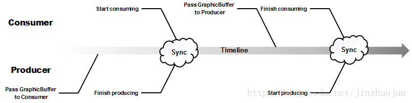
这个通知GraphicBuffer被上一个使用者用完的信号就是由Fence完成的。Fence的存在非常单纯，从诞生开始就是为了在合适的时间发出一个信号。另一个角度来说，为什么不在生产者把GraphicBuffer交给消费者时就调用glFinish()等GPU完成呢？这样拥有权和使用权就一并传递了，无需Fence。就功能上这样做是可以的，但性能会有影响，因为glFinish()是阻塞的，这时CPU为了等GPU自己也不能工作了。如果用Fence的话就可以等这个GraphicBuffer真正要被消费者用到时再阻塞，而那之前CPU和GPU是可以并行工作的。这样相当于实现了临界资源的lazy passing。
说完Fence的基本作用，再说下它的实现。Fence，顾名思义就是把先到的拦住，等后来的，两者步调一致了再往前走。抽象地说，Fence包含了同一或不同时间轴上的多个时间点，只有当这些点同时到达时Fence才会被触发.
Fence可以由硬件实现(Graphic driver)，也可以由软件实现(Android kernel中的sw_sync)。EGL中提供了同步对象的扩展KHR_fence_sync [http://www.khronos.org/registry/vg/extensions/KHR/EGL_KHR_fence_sync.txt] 。其中提供了eglCreateSyncKHR ()，eglDestroySyncKHR()产生和销毁同步对象。这个同步对象是往GL command队列中插入的一个特殊操作，当执行到它时，会发出信号指示队列前面的命令已全部执行完毕。函数eglClientWaitSyncKHR()可让调用者阻塞等待信号发生。
在此基础之上，Android对其进行了扩展-ANDROID_native_fence_sync [http://www.khronos.org/registry/egl/extensions/ANDROID/EGL_ANDROID_native_fence_sync.txt] ，新加了接口eglDupNativeFenceFDANDROID()。它可以把一个同步对象转化为一个文件描述符（反过来，eglCreateSyncKHR()可以把文件描述符转成同步对象)。这个扩展相当于让CPU中有了GPU中同步对象的句柄，文件描述符可以在进程间传递(通过binder或domain socket等IPC机制)，这就为多进程间的同步提供了基础。我们知道Unix系统一切皆文件，因此，有个这个扩展以后Fence的通用性大大增强了。
Android还进一步丰富了Fence的software stack。主要分布在三部分：
- C++ Fence类位于/frameworks/native/libs/ui/Fence.cpp
- C的libsync库位于/system/core/libsync/sync.c
- Kernel driver部分位于/drivers/base/sync.c
总得来说，kernel driver部分是同步的主要实现，libsync是对driver接口的封装，Fence是对libsync的进一步的C++封装。Fence会被作为GraphicBuffer的附属随着GraphicBuffer在生产者和消费间传输。另外Fence的软件实现位于/drivers/base/sw_sync.c。SyncFeatures用以查询系统支持的同步机制：/frameworks/native/libs/gui/SyncFeatures.cpp。
下面分析下Fence在Android中的具体用法。它主要的作用是GraphicBuffer在App, GPU和HWC三者间传递时作同步。
首先温故一下GraphicBuffer从App到Display的旅程:
- GraphicBuffer先由App端作为生产者进行绘制，然后放入到BufferQueue，等待消费者取出作下一步的渲染合成。
- SurfaceFlinger作为消费者，会把每个层对应的GraphicBuffer取来生成EGLImageKHR对象。合成时对于GraphicBuffer的处理分两种情况。
- 对于Overlay的层，SurfaceFlinger会直接将其buffer handle放入HWC的Layer list。
- 对于需要GPU绘制的层（超出HWC处理层数或者有复杂变换的），SurfaceFlinger会将前面生成的EGLImageKHR通过glEGLImageTargetTexture2DOES()作为纹理进行合成。合成完后SurfaceFlinger又作为生产者，把GPU合成好的framebuffer的handle置到HWC中的FramebufferTarget中(HWC中hwc_display_contents_1_t中的hwc_layer_1_t列表最后一个slot用于放GPU的渲染结果所在buffer)。HWC最后叠加Overlay层再往Display上扔，这时HWC是消费者。
整个大致流程如图：
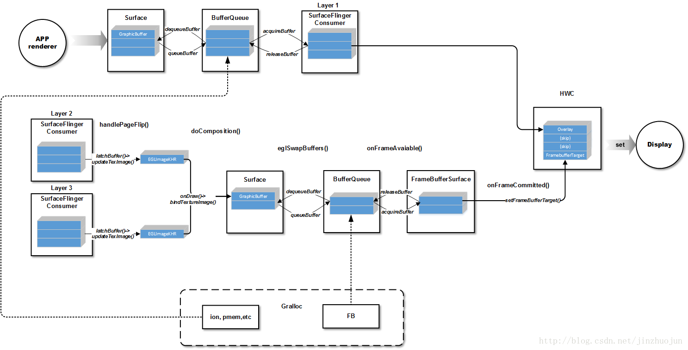
可以看到，对于非Overlay的层来说GraphicBuffer先后经过两个生产消费者模型。我们知道GraphicBuffer核心包含的是buffer_handle_t结构，它指向的native_handle_t包含了gralloc中申请出来的图形缓冲区的文件描述符和其它基本属性，这个文件描述符会被同时映射到客户端和服务端，作为共享内存。
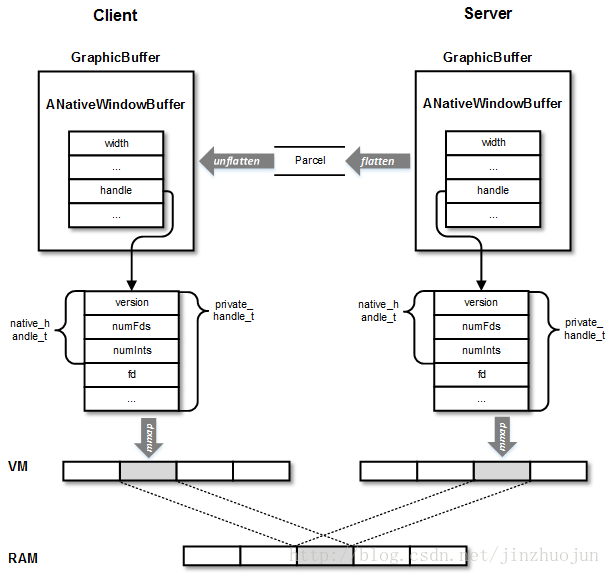
由于服务和客户端进程都可以访问同一物理内存，因此不加同步的话会引起错误。为了协调客户端和服务端，在传输GraphicBuffer时，还带有Fence，标志了它是否被上一个使用者使用完毕。Fence按作用大体分两种：acquireFence和releaseFence。前者用于生产者通知消费者生产已完成，后者用于消费者通知生产者消费已完成。
下面分别看一下这两种Fence的产生和使用过程。
首先是acquireFence的使用流程：
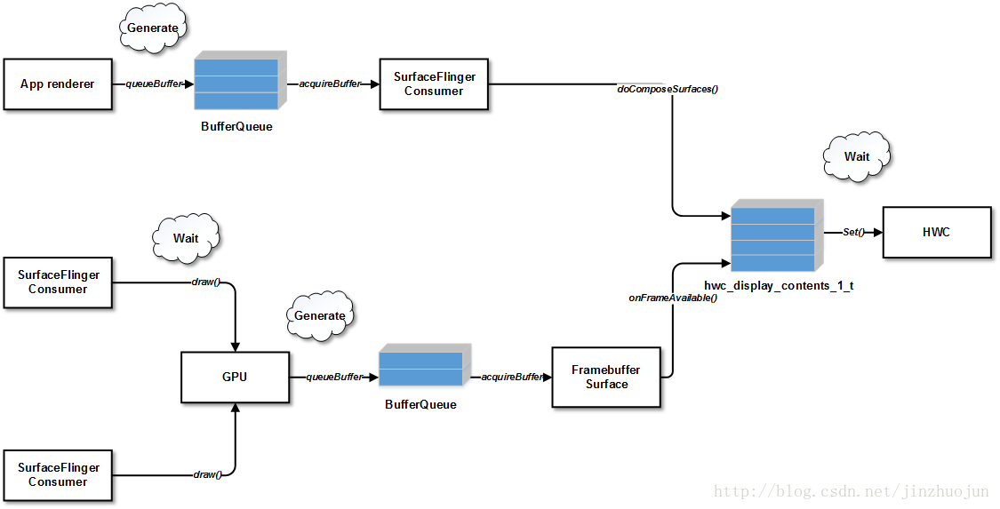
当App端通过queueBuffer()向BufferQueue插入GraphicBuffer时，会顺带一个Fence，这个Fence指示这个GraphicBuffer是否已被生产者用好。之后该GraphicBuffer被消费者通过acquireBuffer()拿走，同时也会取出这个acquireFence。之后消费者（也就是SurfaceFlinger）要把它拿来渲染时，需要等待Fence被触发。如果该层是通过GPU渲染的，那么使用它的地方是Layer::onDraw()，其中会通过bindTextureImage()绑定纹理：1
486 status_t err = mSurfaceFlingerConsumer->bindTextureImage();
该函数最后会调用doGLFenceWaitLocked()等待acquireFence触发。因为再接下来就是要拿来画了，如果这儿不等待直接往下走，那渲染出来的就是错误的内容。
如果该层是HWC渲染的Overlay层，那么不需要经过GPU，那就需要把这些层对应的acquireFence传到HWC中。这样，HWC在合成前就能确认这个buffer是否已被生产者使用完，因此一个正常点的HWC需要等这些个acquireFence全被触发才能去绘制。这个设置的工作是在SurfaceFlinger::doComposeSurfaces()中完成的，该函数会调用每个层的layer::setAcquireFence()函数：1
2
3
4
5
6428 if (layer.getCompositionType() == HWC_OVERLAY) {
429 sp<Fence> fence = mSurfaceFlingerConsumer->getCurrentFence();
...
431 fenceFd = fence->dup();
...
437 layer.setAcquireFenceFd(fenceFd);
可以看到其中忽略了非Overlay的层，因为HWC不需要直接和非Overlay层同步，它只要和这些非Overlay层合成的结果FramebufferTarget同步就可以了。GPU渲染完非Overlay的层后，通过queueBuffer()将GraphicBuffer放入FramebufferSurface对应的BufferQueue，然后FramebufferSurface::onFrameAvailable()被调用。它先会通过nextBuffer()->acquireBufferLocked()从BufferQueue中拿一个GraphicBuffer，附带拿到它的acquireFence。接着调用HWComposer::fbPost()->setFramebufferTarget()，其中会把刚才acquire的GraphicBuffer连带acquireFence设到HWC的Layer list中的FramebufferTarget slot中：1
2
3580 acquireFenceFd = acquireFence->dup();
...
586 disp.framebufferTarget->acquireFenceFd = acquireFenceFd;
综上，HWC进行最后处理的前提是Overlay层的acquireFence及FramebufferTarget的acquireFence都被触发。
看完acquireFence，再看看releaseFence的使用流程：
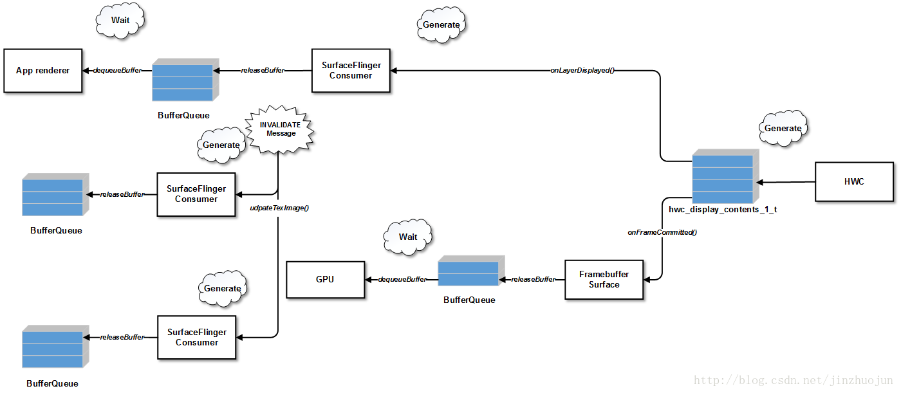
前面提到合成的过程先是GPU工作，在doComposition()函数中合成非Overlay的层，结果放在framebuffer中。然后SurfaceFlinger会调用postFramebuffer()让HWC开始工作。postFramebuffer()中最主要是调用HWC的set()接口通知HWC进行合成显示，然后会将HWC中产生的releaseFence（如有）同步到SurfaceFlingerConsumer中。实现位于Layer的onLayerDisplayed()函数中：1
151 mSurfaceFlingerConsumer->setReleaseFence(layer->getAndResetReleaseFence());
上面主要是针对Overlay的层，那对于GPU绘制的层呢？在收到INVALIDATE消息时，SurfaceFlinger会依次调用handleMessageInvalidate()->handlePageFlip()->Layer::latchBuffer()->SurfaceFlingerConsumer::updateTexImage() ，其中会调用该层对应Consumer的GLConsumer::updateAndReleaseLocked() 函数。该函数会释放老的GraphicBuffer，释放前会通过syncForReleaseLocked()函数插入releaseFence，代表如果触发时该GraphicBuffer消费者已经使用完毕。然后调用releaseBufferLocked()还给BufferQueue，当然还带着这个releaseFence。这样，当这个GraphicBuffer被生产者再次通过dequeueBuffer()拿出时，就可以通过这个releaseFence来判断消费者是否仍然在使用。
另一方面，HWC合成完毕后，SurfaceFlinger会依次调用DisplayDevice::onSwapBuffersCompleted() -> FramebufferSurface::onFrameCommitted()。onFrameCommitted()核心代码如下：1
2
3
4148 sp<Fence> fence = mHwc.getAndResetReleaseFence(mDisplayType);
...
151 status_t err = addReleaseFence(mCurrentBufferSlot,
152 mCurrentBuffer, fence);
此处拿到HWC生成的FramebufferTarget的releaseFence，设到FramebufferSurface中相应的GraphicBuffer Slot中。这样FramebufferSurface对应的GraphicBuffer也可以被释放回BufferQueue了。当将来EGL从中拿到这个buffer时，照例也要先等待这个releaseFence触发才能使用。
Android Synchronization Fences – An Introduction
翻译自http://netaz.blogspot.com/2013/10/android-fences-introduction-in-any.html
使用生产者和消费者之间交换 buffer 的系统, 都需要一种策略来控制 buffer lifecycle（分配/释放）及对buffer（读/写）的access。 buffer访问控制策略确定生产者或消费者是否可以互斥的方式访问buffer。
Android Fence是一种实现特定缓冲访问控制策略的机制，并且不处理buffer lifecycle（分配/释放, 这是由BufferQueue/Gralloc来控制的）, 允许Producer:Consumers 为1:N的关系。 Fence 工作在Buffer之外（即它不是Buffer结构的一部分）， 用于同步Producer和Comsumer之间的Buffer所有权(access)的交换。
特别重要的是，在Android要求使用Fence的情况下，消费者仅仅获得到Buffer的pointer是不够的 - 即使是由生产者显式提供的，还必须得到Fence授权才可以access这块buffer.
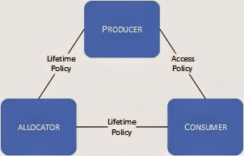
Timelines, Synchronization Points and Fences
要充分了解Android Fence，还需要熟悉Timelines和Sync point。 内核文档（linux / kernel / Documentation / sync.txt）提供了有关我可以找到的这些概念的唯一信息来源，我把它放在这里：
Motivation:
In complicated DMA pipelines such as graphics (multimedia, camera, gpu, display)
a consumer of a buffer needs to know when the producer has finished producing
it. Likewise the producer needs to know when the consumer is finished with the
buffer so it can reuse it. A particular buffer may be consumed by multiple
consumers which will retain the buffer for different amounts of time. In
addition, a consumer may consume multiple buffers atomically.
The sync framework adds an API which allows synchronization between the
producers and consumers in a generic way while also allowing platforms which
have shared hardware synchronization primitives to exploit them.Goals:
* provide a generic API for expressing synchronization dependencies * allow drivers to exploit hardware synchronization between hardware blocks * provide a userspace API that allows a compositor to manage dependencies. * provide rich telemetry data to allow debugging slowdowns and stalls of the graphics pipeline.Objects:
* sync_timeline * sync_pt * sync_fencesync_timeline:
A sync_timeline is an abstract monotonically increasing counter. In general,
each driver/hardware block context will have one of these. They can be backed
by the appropriate hardware or rely on the generic sw_sync implementation.
Timelines are only ever created through their specific implementations
(i.e. sw_sync.)sync_pt:
A sync_pt is an abstract value which marks a point on a sync_timeline. Sync_pts
have a single timeline parent. They have 3 states: active, signaled, and error.
They start in active state and transition, once, to either signaled (when the
timeline counter advances beyond the sync_pt’s value) or error state.sync_fence:
Sync_fences are the primary primitives used by drivers to coordinate
synchronization of their buffers. They are a collection of sync_pts which may
or may not have the same timeline parent. A sync_pt can only exist in one fence
and the fence’s list of sync_pts is immutable once created. Fences can be
waited on synchronously or asynchronously. Two fences can also be merged to
create a third fence containing a copy of the two fences’ sync_pts. Fences are
backed by file descriptors to allow userspace to coordinate the display pipeline
dependencies.Use:
A driver implementing sync support should have a work submission function which:
* takes a fence argument specifying when to begin work * asynchronously queues that work to kick off when the fence is signaled * returns a fence to indicate when its work will be done. * signals the returned fence once the work is completed.Consider an imaginary display driver that has the following API:
2
3
4
5
* assumes buf is ready to be displayed.
* blocks until the buffer is on screen.
*/
void display_buffer(struct dma_buf *buf);The new API will become:
2
3
4
5
6
7
* will display buf when fence is signaled.
* returns immediately with a fence that will signal when buf
* is no longer displayed.
*/
struct sync_fence* display_buffer(struct dma_buf *buf,
struct sync_fence *fence);
上述对象之间的关系如下 2图 所示。
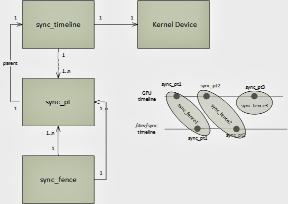
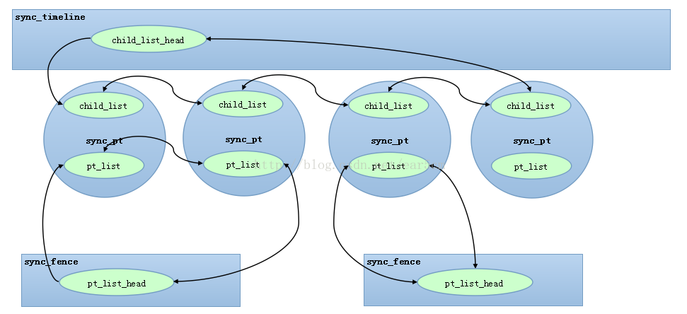
Android Fence实现细节
userspace 代码可以在C ++实现（使用Fence类）和C代码库实现之间进行选择。 C ++实现只是围绕C sync库代码的精简包装，而C库只是在实现sync API的内核设备上调用ioctl系统调用。
- Android内核包括“sync”模块，也称为Synchronization 框架，它实现了timeline, sync point, fence。 该模块可以由选择实现sync API的deriver利用。
- 内核还包括一个sw timeline driver/ (dev / sync)，该driver实现了一个基于软件的timeline， SW timeline 驱动使用内核的Synchronization框架。
了解Sync API
在用户空间中使用Synchronization API的第一步是创建timeline handle（文件描述符）。 下面的示例调用流程显示了用户空间C库如何使用函数sw_sync_timeline_create为generic software timeline（sw_sync）的实例创建一个句柄。
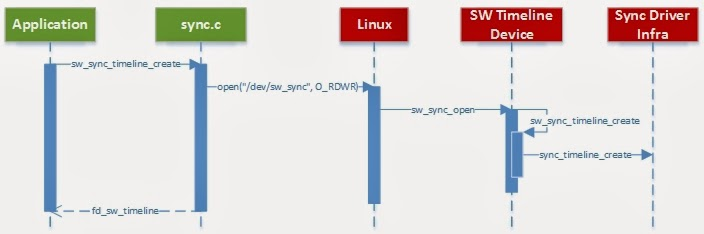
创建timeline后，用户可以任意增加timeline计数器（ sw_sync_timeline_inc ）或创建fence handle（ sw_sync_fence_create ）。 每个fence最初在时间线上包含一个sync point。
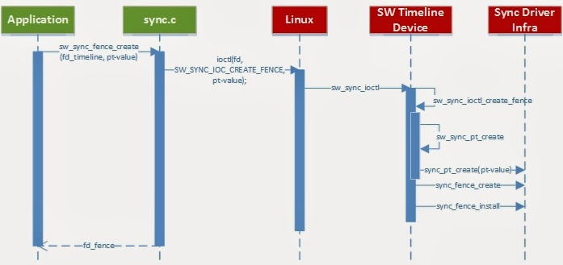
如果用户需要两个或更多的sync point附加到Fence，可以这样搞: 再创建一个Fence，然后将它们合并在一起（ sync_merge ）。1
2
3
4
5
6
7
8
9
10//创建一个generic 的sw_sync时间轴
int sw_timelime = sw_sync_timeline_create（）;
//在sw_sync时间轴上创建两个Fence with sync point 2和5
int sw_fence1 = sw_sync_fence_create（sw_timeline，“fence1”，2）;
int sw_fence2 = sw_sync_fence_create（sw_timeline，“fence2”，5）;
//合并sw_fence1和sw_fence2以创建包含的单个Fence
//两个同步点
int sw_fence3 = sync_merge（“fence3”，sw_fence1，sw_fence2）;
内核sync API（用于内核模块）类似，但需要显式创建同步点：1
2
3
4
5
6
7
8
9
10
11
12//创建一个通用的sw_sync时间轴
struct sync_timeline * timeline = sw_sync_timeline_create（“some_name”）;
//创建一个sync_pt
struct sync_pt * pt = sw_sync_pt_create（sfb-> timeline，sfb-> timeline_max）;
//创建一个附加到sync_pt的Fence
struct sync_fence * fence = sync_fence_create（“some_other_name”，pt）;
//将文件描述符附加到Fence
int fd = get_unused_fd（）
sync_fence_install（fence，fd）;
使用Fence进行同步
回想一下，timeline抽象代表一个单调递增的计数器，sync point代表该计数器的特定未来值（时间线上的点）, timeline如何增加是timeline specificed。 例如，
- GPU可以使用内部时钟计数器中断来增加其 timeline 计数器。
- 在调用sw_sync_timeline_inc时，使用Synchronization API 的app手动增加generic sw_sync时间轴。
sync point 值的意义和两个sync point 如何比较的方法也是时间轴特定的。 sw_sync设备在线上绘制简单点。 当Sync框架收到时间轴计数器增加的通知时，它将测试计数器是否达到时间轴上现有同步点的时间轴值，并触发相关Fence上的唤醒事件 – Whenever the Synchronization framework is notified of timeline counter increase, it tests if the counter reached (or passed) the timeline value of existing synchronization points on the timeline and triggers wake-up events on the relevant fences.
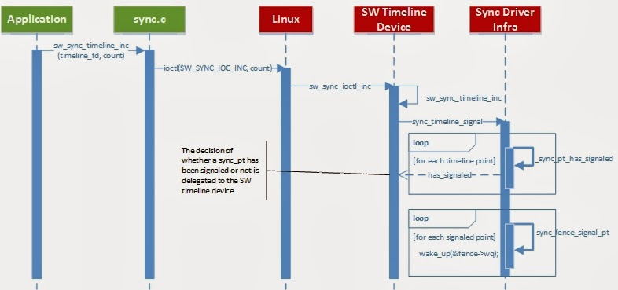
Userspace 模块通过sync_wait API来获得Fence状态改变, Kernel 模块里也有类似的API，另外kernel模块还可以使用异步Fence状态更改通知的API（通过回调注册）。
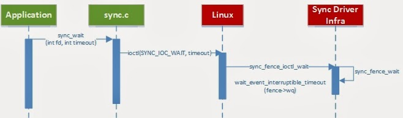
当用户空间关闭一个有效的sync_timeline句柄时，Sync框架会检查是否需要在该Timeline上signal()持有相应Syncpoint的Fence, 而关闭Fence句柄不会触发signal(): 只会从相应的时间线上移除包含在该Fence上的同步点。
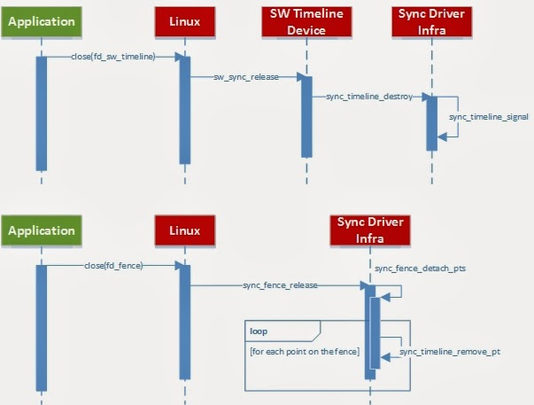
参考:
- Userspace C++ Fence Wrapper
frameworks/native/libs/ui/Fence.cpp
frameworks/native/include/ui/Fence.h - Userspace C Library
system/core/libsync/sync.c - Kernel Software Timeline
kernel/drivers/staging/android/sw_sync.h
kernel/drivers/staging/android/sw_sync.c
external/kernel-headers/original/linux/sw_sync.h - Kernel Fence Framework
external/kernel-headers/original/linux/sync.h
kernel/drivers/staging/android/sync.h
kernel/drivers/staging/android/sync.c